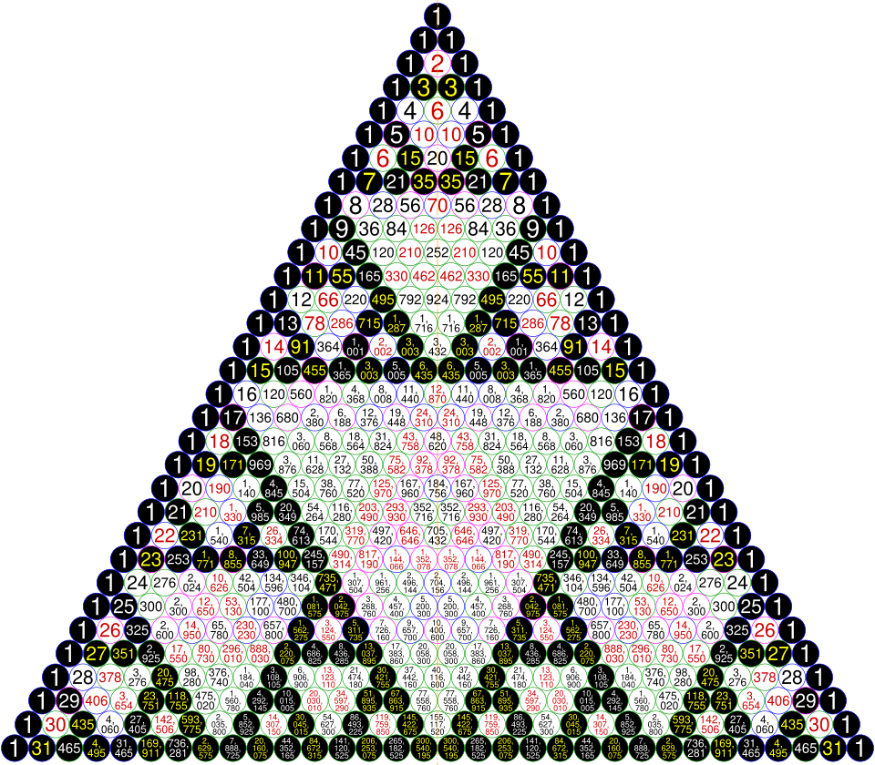
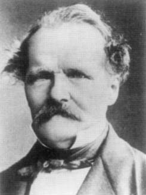

C(n, k) = n! / (k!(n − k)!) (1 + x)α = ∑ₖ C(α, k) xᵏ
C(n, k) ≡ ∏ᵢ C(nᵢ, kᵢ) (mod p) vp C(n, k) = #carries in k + (n − k), base p
C(2n, n) ~ 4ⁿ / √(πn) [n k]q = #{k-dimensional subspaces of Fqⁿ}
The arithmetic triangle is one of the oldest objects in mathematics. It appears in the work of Pingala and his commentator Halāyudha in India, in al-Karajī and al-Samaw'al in the Islamic world, in Yang Hui (1261) and Zhu Shijie (1303) in China, and in Tartaglia, Stifel and Cardano in Renaissance Europe, long before Blaise Pascal's Traité du triangle arithmétique (written 1654, published 1665). Pascal's contribution was not the triangle itself but a systematic treatment of it, including one of the earliest explicit uses of mathematical induction. This course takes the elementary facts as known — the factorial formula, Pascal's rule, row sums, the hockey stick, the binomial theorem for natural exponents, lattice paths and Vandermonde's identity — and develops the theory as it appears in graduate combinatorics, number theory and analysis.
The guiding observation is that the binomial coefficient lives simultaneously in several worlds. Combinatorially, C(n, k) counts k-subsets of an n-set. Algebraically, C(x, k) = x(x − 1)⋯(x − k + 1)/k! is a polynomial, and the identities of the triangle are polynomial identities valid for arbitrary complex upper index. Analytically, C(α, k) are the Taylor coefficients of (1 + x)α, and C(n, k) has precise asymptotics governed by Stirling's formula and the normal distribution. Arithmetically, the residues of C(n, k) modulo a prime p are controlled by the base-p digits of n and k, which is why the triangle reduced modulo 2 is a discrete Sierpinski gasket. Finally, the triangle admits deformations — multinomial coefficients, which form Pascal's simplex, and Gaussian coefficients, which count subspaces of vector spaces over finite fields — and it contains the Catalan numbers, which govern the ballot problem. The course closes with an open problem: Singmaster's conjecture on how often an integer can occur in the triangle.
Notation. Throughout, ℕ = {0, 1, 2, …}, C(α, k) denotes the binomial coefficient with upper index α and lower index k, xk = x(x − 1)⋯(x − k + 1) denotes the falling factorial (with x0 = 1), sp(n) denotes the sum of the base-p digits of n, vp(m) denotes the exponent of the prime p in the nonzero rational m, and [xⁿ]F(x) denotes the coefficient of xⁿ in a power series F. Proofs are given in full unless a result is explicitly labelled as cited.
In this course, you will:
- 1.Define C(α, k) for arbitrary α and prove the basic identities as polynomial identities
- 2.Master the four proof techniques: double counting, bijection, sign-reversing involution and the polynomial method
- 3.Prove the Chu–Vandermonde identity in full generality and read it as a binomial-type property of falling factorials
- 4.Use ordinary and exponential generating functions, the binomial transform and the Pascal matrix
- 5.Prove Newton's generalized binomial theorem and determine its behaviour on the boundary circle
- 6.Use finite differences and Newton interpolation to classify integer-valued polynomials
- 7.Prove the theorems of Lucas, Legendre and Kummer, and apply them to Babbage, Wolstenholme and Bertrand
- 8.Explain the Sierpinski pattern modulo 2 and compute the fractal dimension of the triangle modulo p
- 9.Study multinomial coefficients, Pascal's simplex and their p-adic valuations
- 10.Develop Gaussian binomial coefficients, the q-binomial theorem and their linear-algebraic meaning
- 11.Derive the Catalan numbers by reflection and by the cycle lemma, and solve the ballot problem
- 12.Obtain sharp asymptotics for central and non-central coefficients, and survey Singmaster's conjecture
Figures


Contents
Binomial Coefficients with Arbitrary Upper Index Lesson 2
Four Proof Techniques for Binomial Identities Lesson 3
The Chu–Vandermonde Identity Lesson 4
Generating Functions, the Binomial Transform and the Pascal Matrix Lesson 5
Newton's Generalized Binomial Theorem Lesson 6
Finite Differences and Integer-Valued Polynomials Lesson 7
Lucas' Theorem Lesson 8
Legendre, Kummer and the p-adic Valuation Lesson 9
The Sierpinski Pattern and Fractal Structure Lesson 10
Multinomial Coefficients and Pascal's Simplex Lesson 11
Gaussian Binomial Coefficients Lesson 12
Catalan Numbers, Reflection and the Ballot Problem Lesson 13
Asymptotics of Binomial Coefficients Lesson 14
Multiplicities and Singmaster's Conjecture Problem Set
60 problems Assessment
Randomly generated questions
Image sources
- Figure 1 · Sierpinski Pascal triangle. By Cmglee. CC BY-SA 4.0. From Wikimedia Commons: https://commons.wikimedia.org/wiki/File:Sierpinski_Pascal_triangle.svg
- Figure 2 · Ernst Eduard Kummer. By Unknown photographer. Public domain. From Wikimedia Commons: https://commons.wikimedia.org/wiki/File:Ernst_Eduard_Kummer.jpg